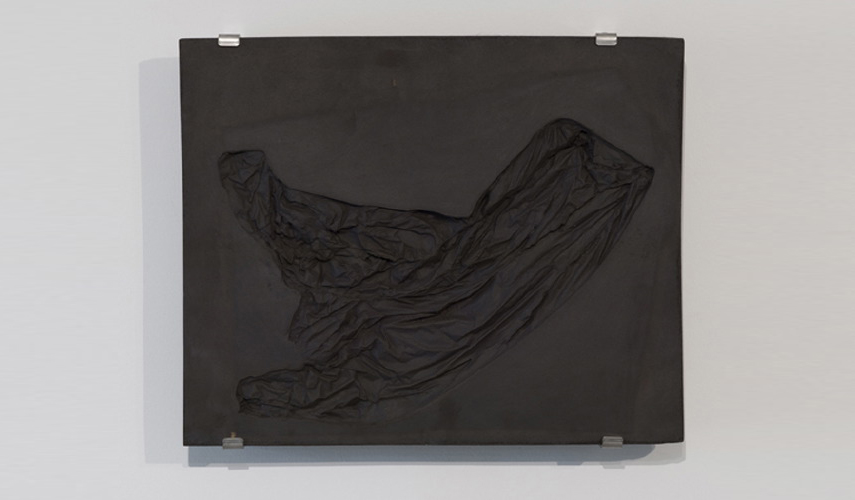

This project brings together two sovereigns of time: geology – the result of a huge length of time -- and the short-lived moments in which a plastic bag takes a given shape before time sweeps it into another. It is literally anachronistic by design. Spatially, the pieces combine two scales: the smallest detail and geological erosion. The project is both anecdotal and historical: the slightest anecdotal object becomes historical with time. Time transforms objects and gives value to the most common objects, but they are doomed to disappear in the long run. This work is connected to Egyptian art; high-relief art appeared before low-relief art. Just like Egyptian art was about surviving through time and extending life in a static eternity, the plastic bag is doomed to survive in a momentary shape. G. Didi Huberman's organic interpretation of plasticity may elucidate the work further when he says plasticity “brings body and style together in the same question of time: survival and metamorphosis will eventually characterize the eternal return itself, shape calling to the shapeless”.
